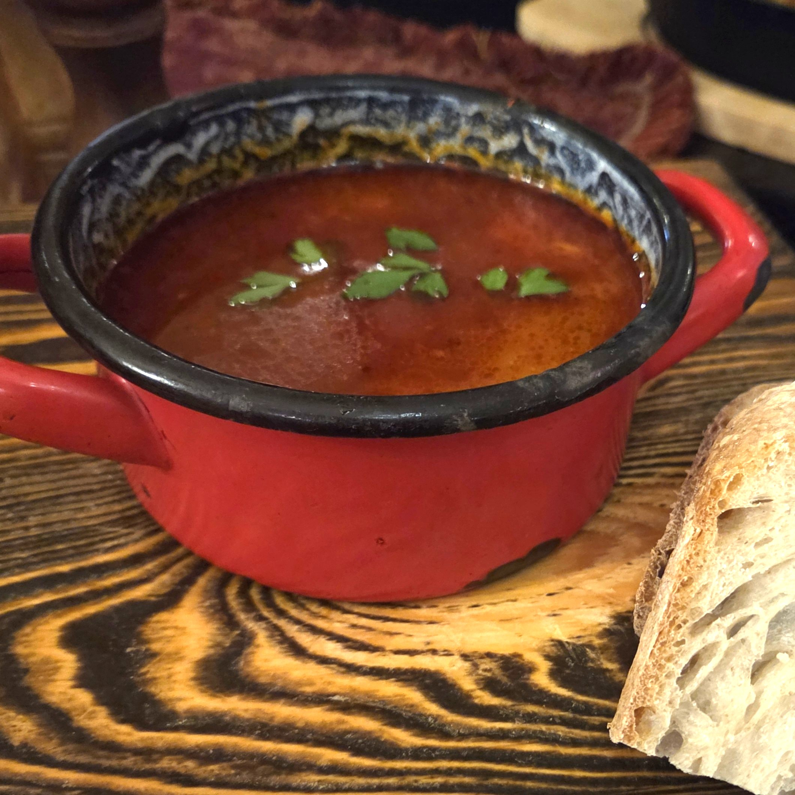
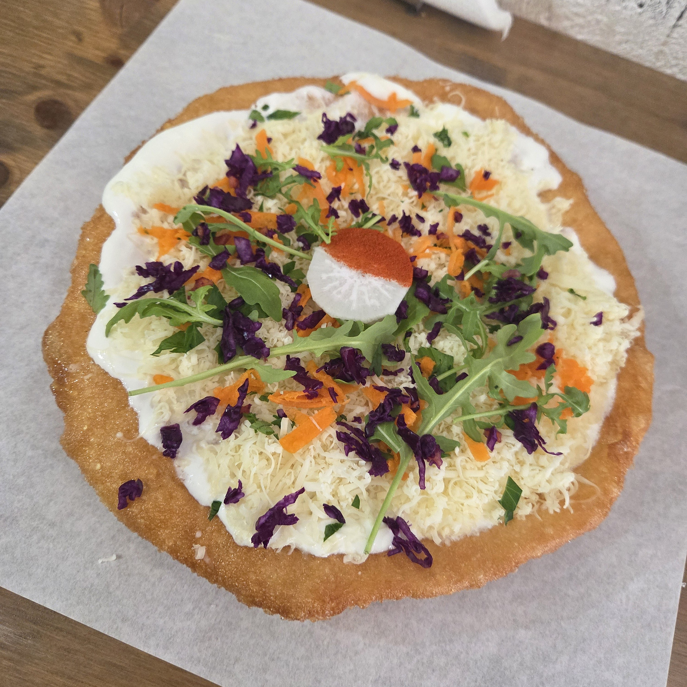
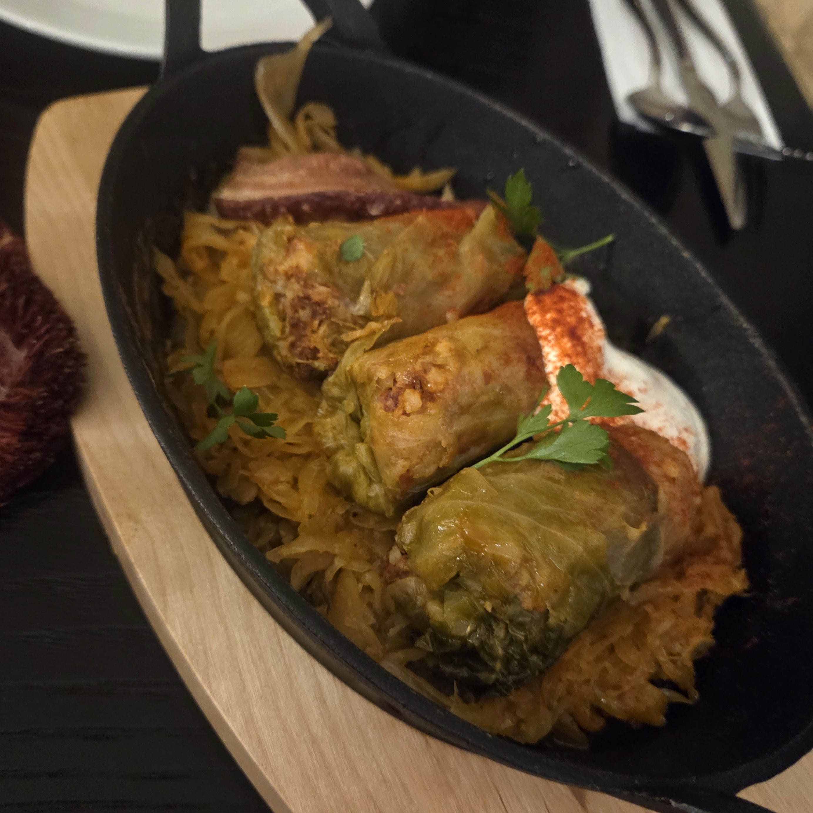
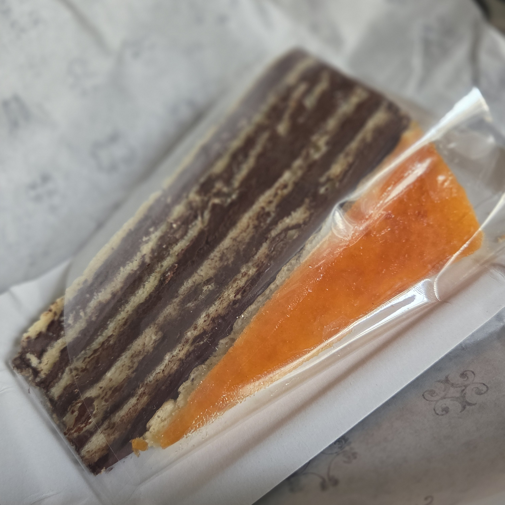
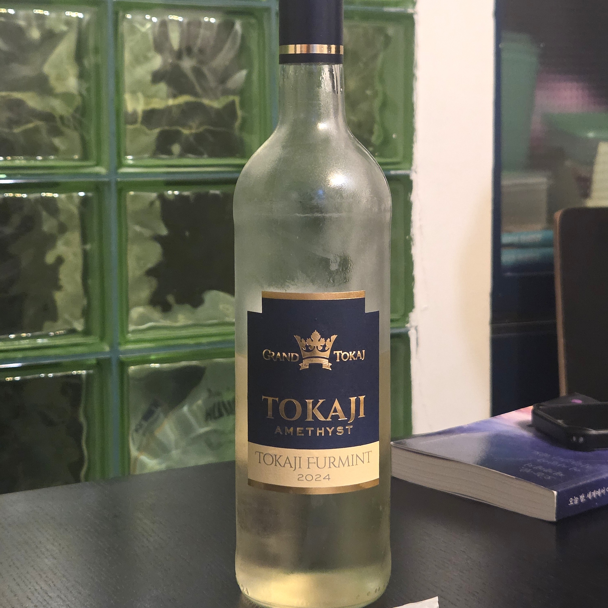
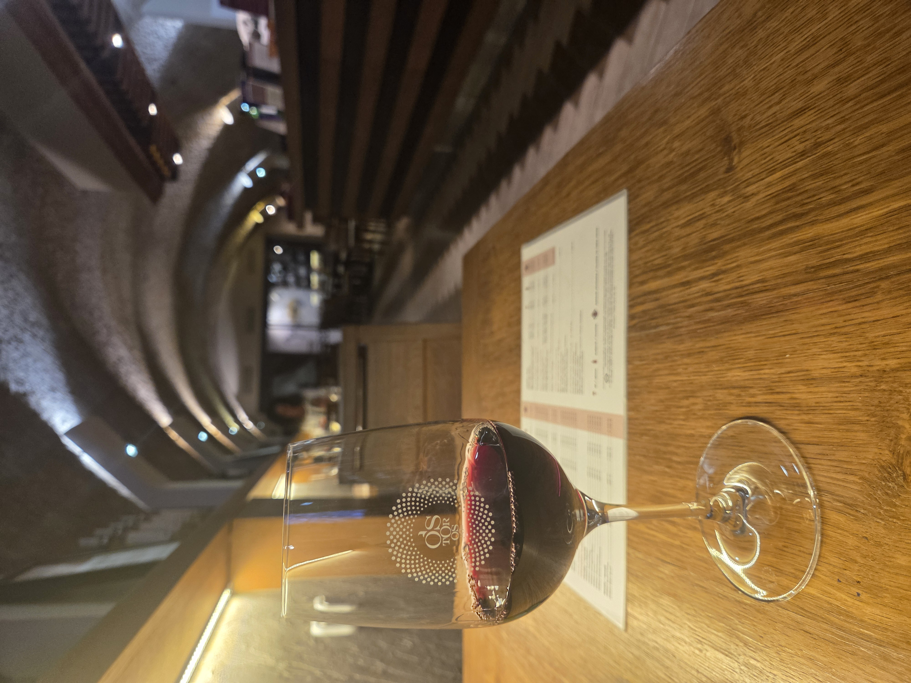
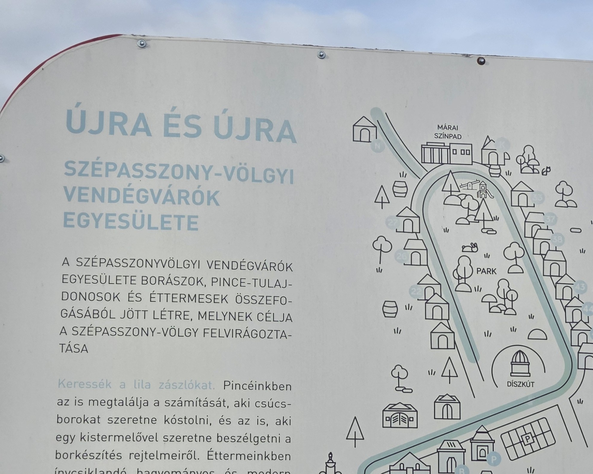

Hungary

EGER · BUDAPEST · SZENTENDRE
로컬 식탁부터 와인까지, 헝가리의 진한 맛
MUST EAT 이건 꼭 먹어야 해!
Goulash

- 파프리카 가루를 듬뿍 넣어 감자, 고기를
함께 끓여낸 헝가리 원조 전통 스튜
- 걸쭉한 체코식과 달리, 육개장처럼
칼칼하고 시원한 국물이 특징
함께 끓여낸 헝가리 원조 전통 스튜
- 걸쭉한 체코식과 달리, 육개장처럼
칼칼하고 시원한 국물이 특징
Langos

- 튀겨낸 납작한 빵 도우 위에 마늘 소스,
사워크림, 치즈를 얹어 먹는 헝가리식 피자
- 겉은 바삭하고 속은 쫄깃한 찹쌀꽈배기
느낌의 식감
- 주로 전통 시장이나 길거리 가판대에서
저렴하고 든든하게 사 먹는 로컬 간식
사워크림, 치즈를 얹어 먹는 헝가리식 피자
- 겉은 바삭하고 속은 쫄깃한 찹쌀꽈배기
느낌의 식감
- 주로 전통 시장이나 길거리 가판대에서
저렴하고 든든하게 사 먹는 로컬 간식
Stuffed Cabbage

- 다진 돼지고기, 쌀, 각종 채소를 양배추로
말아 푹 찐 헝가리식 가정식 요리
- 절인 양배추를 베이스로 사용해 특유의
새콤하고 개운한 맛이 감도는 것이 특징
말아 푹 찐 헝가리식 가정식 요리
- 절인 양배추를 베이스로 사용해 특유의
새콤하고 개운한 맛이 감도는 것이 특징
Dobos Torte

- 도보스 파티시에가 황제 프란츠 요제프 1세
대관식에 맞춰 개발한 헝가리 대표 케이크
- 얇은 스펀지 시트와 초콜릿 버터크림을
여러 겹 쌓아 올린 구조
- 최상단을 단단한 캐러멜로 코팅해 바삭하고
독특한 식감을 자랑함
대관식에 맞춰 개발한 헝가리 대표 케이크
- 얇은 스펀지 시트와 초콜릿 버터크림을
여러 겹 쌓아 올린 구조
- 최상단을 단단한 캐러멜로 코팅해 바삭하고
독특한 식감을 자랑함
Tokaji Wine

- 세계 3대 디저트 와인으로 꼽히는 헝가리
대표 와인
- 등급:
3~6 푸토뇨쉬*로 나누며, 숫자가
높을수록 더 진하고 단 맛
- 토카이 아쑤(Aszú):
5~6단계만 진정한 귀부 와인인 '아쑤'로
인정해 표기함
- 토카이 에선시아(Eszencia):
가장 높은 당도로, 베이스 와인 없이 오직
귀부포도로만 만든 와인
대표 와인
- 등급:
3~6 푸토뇨쉬*로 나누며, 숫자가
높을수록 더 진하고 단 맛
- 토카이 아쑤(Aszú):
5~6단계만 진정한 귀부 와인인 '아쑤'로
인정해 표기함
- 토카이 에선시아(Eszencia):
가장 높은 당도로, 베이스 와인 없이 오직
귀부포도로만 만든 와인
TIP
:
헝가리 레스토랑은 약 10~15%의
Service Charge가 기본 청구되는 경우가 많아 추가 팁을 따로 내지 않아도 돼요.
다만 이 때문에 체감 물가가 생각보다 싸지 않게
느껴질 수 있어요.
EXPERIENCE 헝가리의 숨은 와인 아지트


Eger Wine Village
부다페스트에서는 야경을, 에게르에서는 와인을!
동굴 속에서 보물찾기하듯 즐기는 미식
- '미녀의 계곡'이라 불리는 헝가리 대표 와인 명소동굴 속에서 보물찾기하듯 즐기는 미식
- 수십 개의 동굴 와인숍이 원형으로 위치해
번호로 구분되는 구조
- 진하고 스파이시한 풍미의 레드 와인 '황소의 피'가
시그니처.
- 가격 착한 편이고, 글라스 단위 시음은 물론,
페트병으로 대용량 와인 저렴하게 구입 가능
TIP
:
부다페스트에서 에게르 가는 법:
Budapest-Keleti ➔ Eger
헝가리 철도청 공식 웹사이트 MÁV에서
기차표 예매 가능 ( 공식 예매 링크)
와인 마시는 일정이니 안전하게 근처에 숙소
잡는 것을 추천
근처에 온천들도 있으니 함께 즐기는 코스로 추천